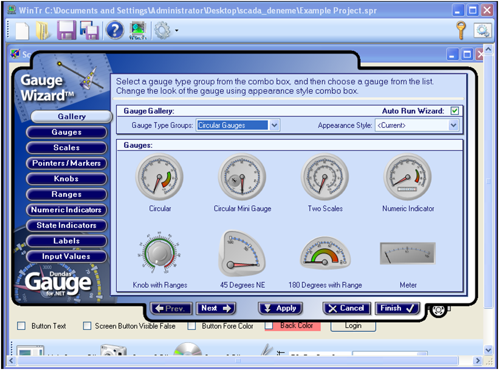

1. Siemens WinCC
Function:
Monitoring and control of industrial processes (PLC-based
systems).
Features:
- Real-time data acquisition
- Graphical HMI screens
- Alarm and event management
- Data logging and reporting
- Seamless integration with Siemens PLCs (S7 series)

2. Wonderware InTouch (AVEVA InTouch)
Function:
Supervision and visualization of industrial automation systems.
Features:
- User-friendly HMI design
- Real-time monitoring
- Alarm management
- Historical data trending
- Supports multiple PLC brands

3. GE iFIX
Function:
Process control and visualization in industrial plants.
Features:
- SCADA-based HMI
- Distributed architecture
- Alarm and event handling
- Data connectivity with PLCs and RTUs
- Scripting for automation

4. Ignition SCADA (Inductive Automation)
Function:
Web-based industrial automation and data management.
Features:
- Web and mobile access
- Unlimited clients and tags
- Built-in historian
- OPC UA support
- Easy integration with databases and cloud systems

5. Citect SCADA (AVEVA Plant SCADA)
Function:
Centralized monitoring and control of industrial processes.
Features:
- High-performance graphics
- Scalable architecture
- Redundancy support
- Alarm, trend, and reporting tools
- Strong cybersecurity options

6. FactoryTalk View (Rockwell Automation)
Function:
Visualization and supervisory control for Allen-Bradley PLCs.
Features:
- Real-time monitoring
- Alarm and diagnostic tools
- Historical data tracking
- Tight integration with Rockwell controllers
- Scalable from small to large systems

7. OpenSCADA
Function:
Open-source SCADA for monitoring and automation.
Features:
- Free and customizable
- Modular design
- Supports multiple communication protocols
- Cross-platform (Linux, Windows)
- Community-driven development

8. ClearSCADA / EcoStruxure Geo SCADA (Schneider Electric)
Function:
Remote monitoring for utilities and infrastructure.
Features:
- Real-time and historical data
- Advanced alarm handling
- Secure remote access
- Ideal for water, power, oil & gas
- Scalable for large geographic areas